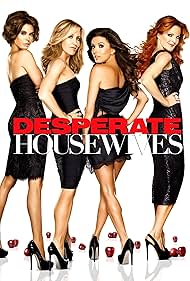
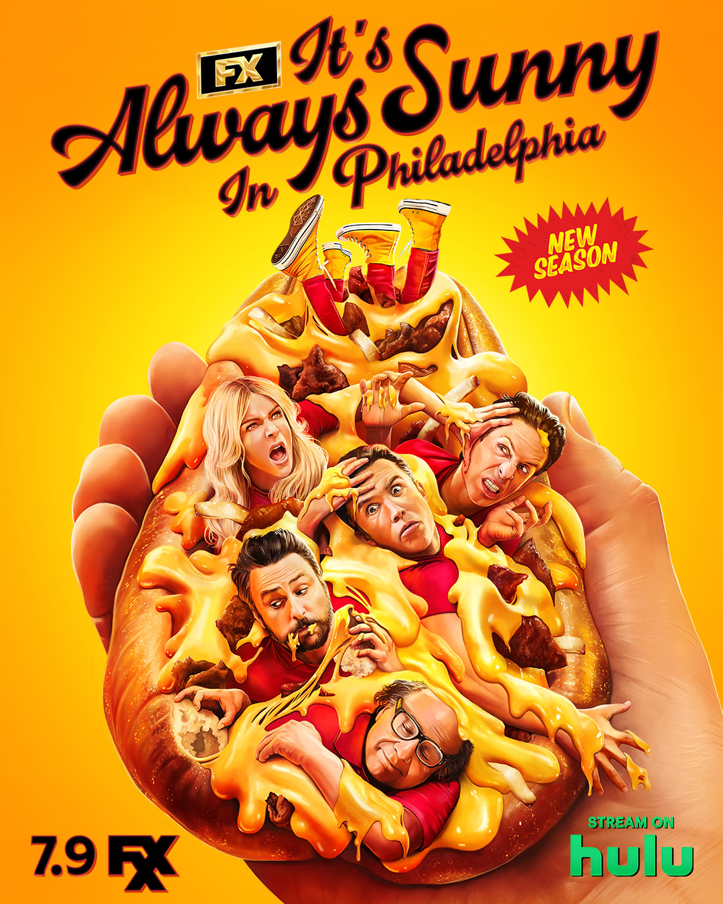
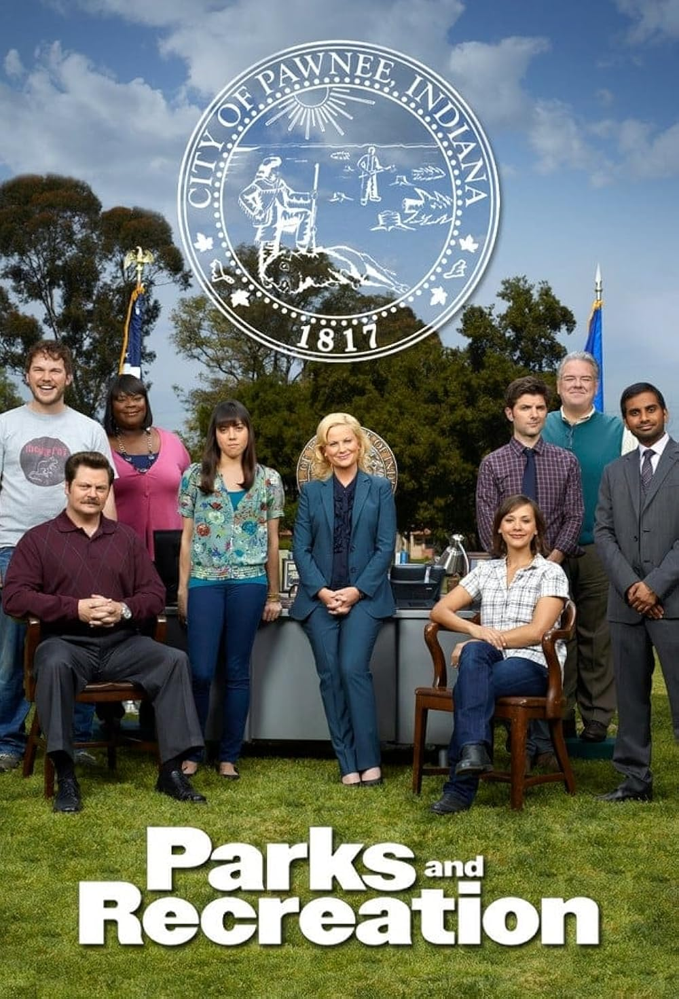
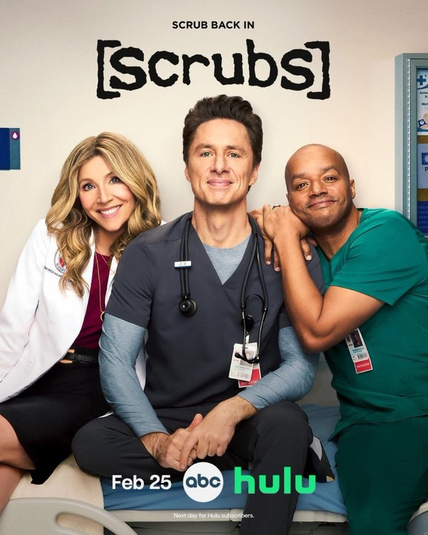
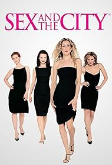
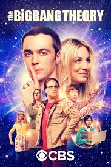
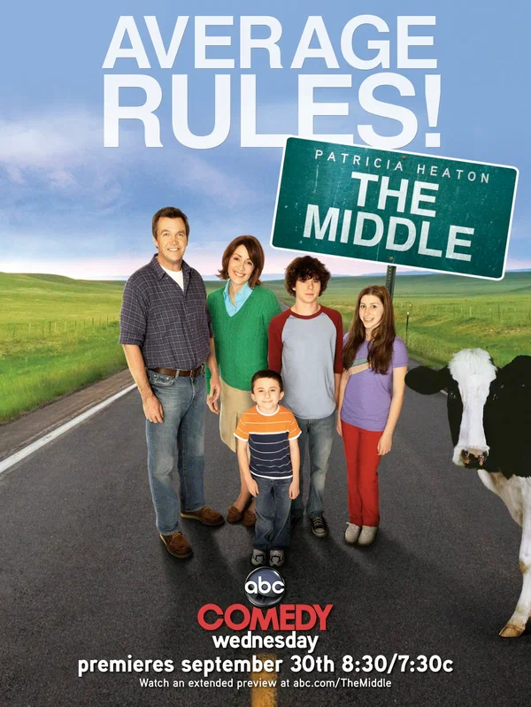

Отчаянные домохозяйки
Годы: 2004–2012
Актёры: Тери Хэтчер, Фелисити Хаффман, Марсия Кросс, Ева Лонгория
Сюжет: История жизни домохозяек с улицы Вистерия Лейн, где за
идеальной картинкой скрываются тайны, интриги и преступления.

Друзья
Годы: 1994–2004
Актёры: Дженнифер Энистон, Кортни Кокс, Лиза Кудроу,
Мэтт Леблан, Мэттью Перри, Дэвид Швиммер
Сюжет: Шесть друзей живут в Нью-Йорке, строят карьеру,
влюбляются и постоянно попадают в забавные ситуации.

Как я встретил вашу маму
Годы: 2005–2014
Актёры: Джош Рэднор, Нил Патрик Харрис, Коби Смолдерс,
Джейсон Сигел, Элисон Хэнниган
Сюжет: Тед рассказывает своим детям длинную историю о том,
как он встретил их мать, вспоминая свою жизнь и друзей.

В Филадельфии всегда солнечно
Годы: 2005–н.в.
Актёры: Чарли Дэй, Гленн Хауэртон, Роб Макэлхенни,
Кейтлин Олсон, Дэнни ДеВито
Сюжет: Компания друзей владеет баром и постоянно попадает
в абсурдные и часто аморальные ситуации.

Парки и зоны отдыха
Годы: 2009–2015
Актёры: Эми Полер, Ник Офферман, Обри Плаза, Крис Пратт
Сюжет: Оптимистичная чиновница Лесли Ноуп работает в
департаменте парков и пытается улучшить жизнь своего города.

Клиника
Годы: 2001–2010
Актёры: Зак Брафф, Дональд Фэйсон, Сара Чок, Джуди Рейес
Сюжет: Молодые врачи проходят практику в больнице,
сталкиваясь с трудностями медицины и личной жизни.

Секс в большом городе
Годы: 1998–2004
Актёры: Сара Джессика Паркер, Ким Кэттролл,
Кристин Дэвис, Синтия Никсон
Сюжет: Четыре подруги в Нью-Йорке обсуждают отношения,
карьеру и личную жизнь.

Теория большого взрыва
Годы: 2007–2019
Актёры: Джим Парсонс, Джонни Галэки, Кейли Куоко,
Саймон Хелберг, Кунал Найяр
Сюжет: Группа гиков-физиков живёт своей жизнью, пока в
неё не вмешивается их соседка Пенни.

Бывает и хуже
Годы: 2009–2018
Актёры: Патриша Хитон, Нил Флинн, Чарли МакДермотт
Сюжет: Семья из среднего класса пытается справляться
с повседневными проблемами и сохранять оптимизм.

Офис
Годы: 2005–2013
Актёры: Стив Карелл, Рэйн Уилсон, Джон Красински, Дженна Фишер
Сюжет: Псевдодокументальный сериал о жизни сотрудников
офиса бумажной компании и их странного босса.